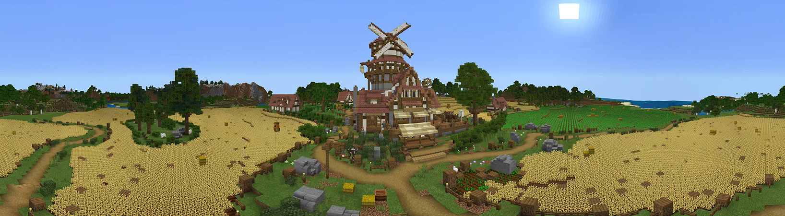
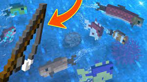
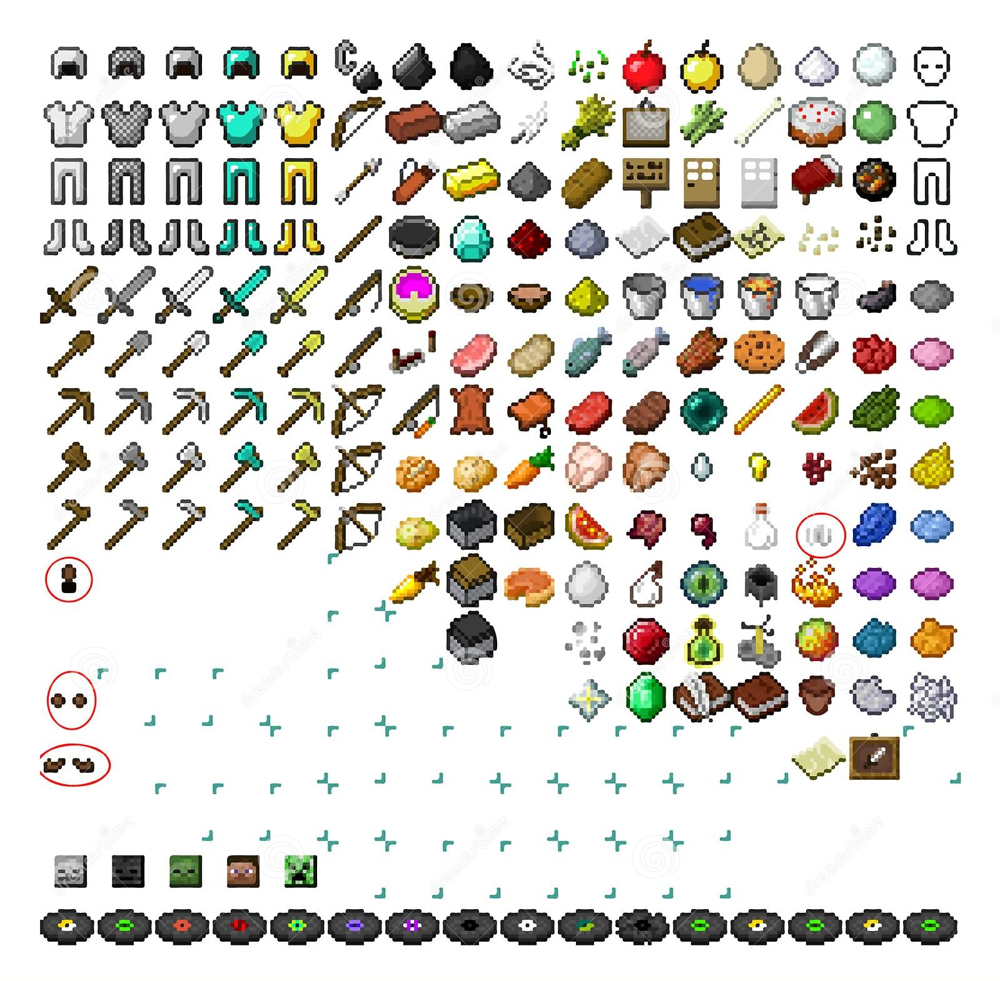
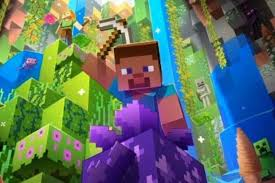
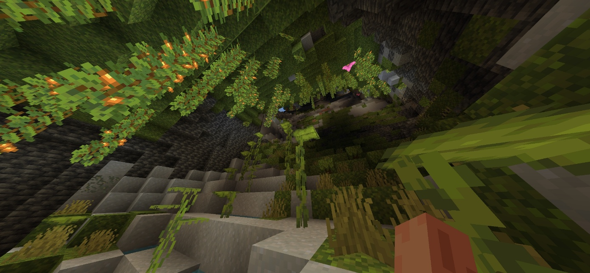
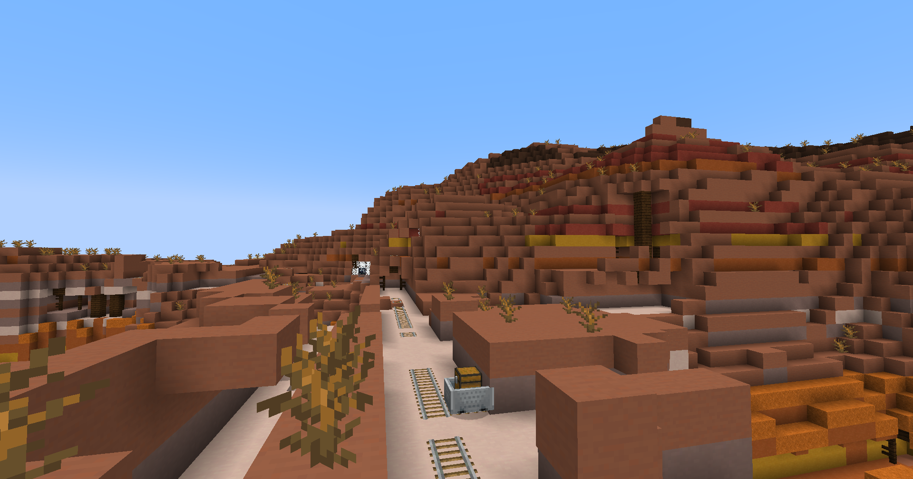
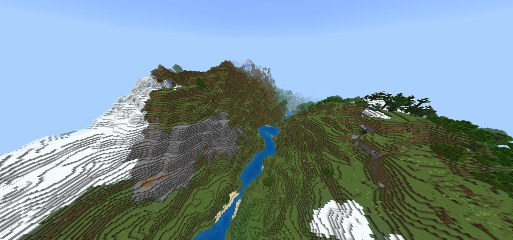
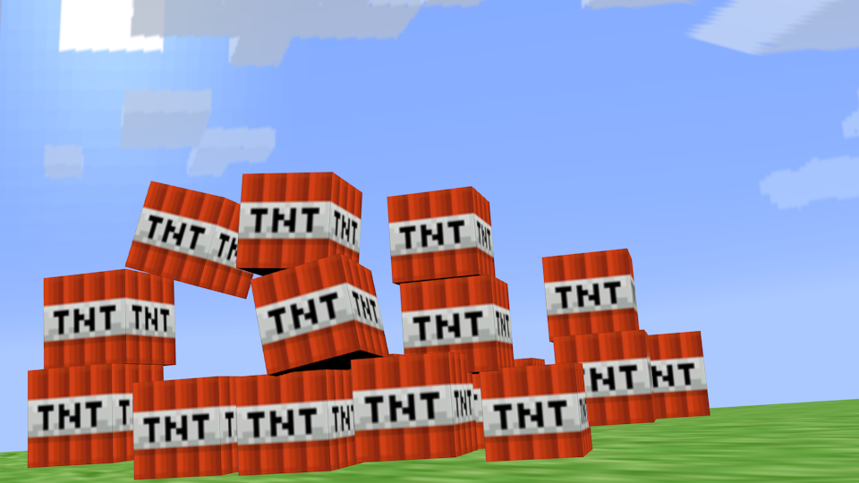
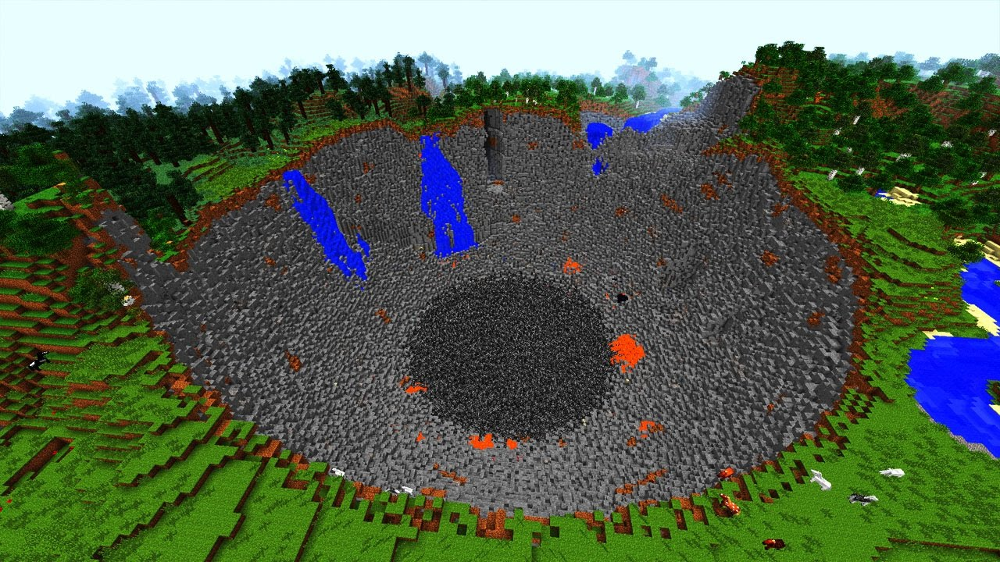

[SDGR] Minecraft
지뢰만들기
오늘의 소개할 게임은 minecraft!
마인크래프트는 모두가 한 번쯤은 들어본 게임이고 여러 매체에서 한 번쯤은 접해본 유명한 게임이다.
무려 2021년 12월 15일 기준 마인크래프트는 유튜브 조회수 1조 회를 돌파한 첫 게임이 되기도 했다.
샌드박스와 서바이벌이며 게임 안 모든 것이 네모난 블록으로 만들어진 세계에서 적대적인 생명체를 피하거나
물리치고 건축물을 짓고 여러 도구들 만들어내고 농사, 사냥, 채광, 낚시 등을 하며 어디든지 자유롭게 플레이하는 게임이다.
저는 마인크래프트를 700시간 이상 했는데 700시간을 할 수 있던 마인크래프트만의 매력은 꾸준한 업데이트와 다양한 콘텐츠와 모드, 텍스처 팩, 스킨 등 게임의 그래픽을 결정하거나 내용을 결정하는 것이 회사가 노력한 것과 유저들이 만들어내는 것이 합쳐져 많은 사람에게 사랑을 받고 지금까지 사랑받고 있는 이유인 것 같다. 마인크래프트는 혼자 즐겨도 재밌지만, 함께 즐기는 것이 마인크래프트의 또 다른 매력인 것 같다.
   
minecraft의 그래픽은 네모를 쌓는 그래픽이라 가까이서 보면 투박할 수 있지만 멀리서 보면 자연스럽고 마인크래프트 그래픽을 한층 더 높일 수 있는 리소스팩, 텍스처팩 등을 적용 하면 네모가 아닌 향상된 그래픽도 경험할 수 있다. 마크의 사운드는 깔끔하고 각 환경에 맞는 효과음들이 적절하게 들어가 있어 자연스러운 소리가 들린다. 또 게임이 유명한만큼 최적화와 UI도 잘 되어 있고 게임 내의 요소들을 자유롭게 이용할 수 있어서 무궁무진하게 활용해 나만의 세계를 만들 수 있다.
 
게임의 난이도는 비교적 낮은편이며 조작도 쉬워서 누구나 좀만 연습한다면 금방 익숙해 진다. 또 마인크래프트의 인식은 말 하지 않아도 게임 완성도가 보장되어 있고 창의력을 마음껏 발휘 할 수 있다. 가격은 각각의 플랫폼 마다 사용하는 에디션이 다르고 최소 8,000원 대부터 30,000원 대까지 있다. 마인크래프트의 플레이시간은 목표를 어떻게 설정하는지에 달라서 자유롭게 시간을 정해서 하면 된다.
 